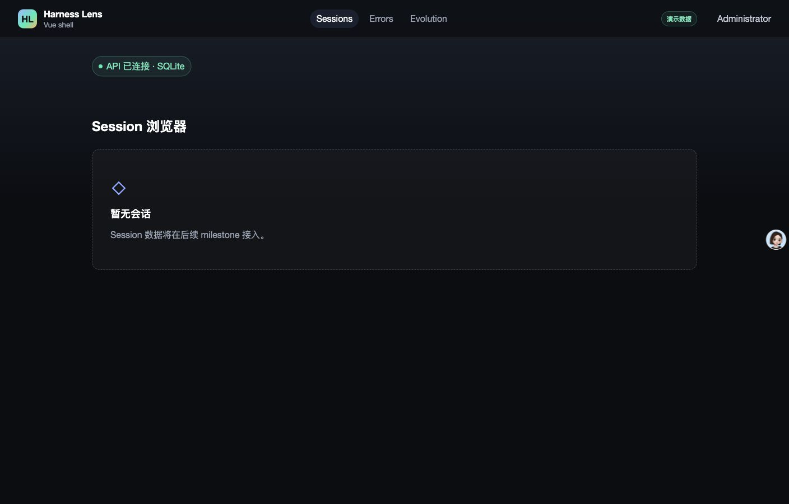
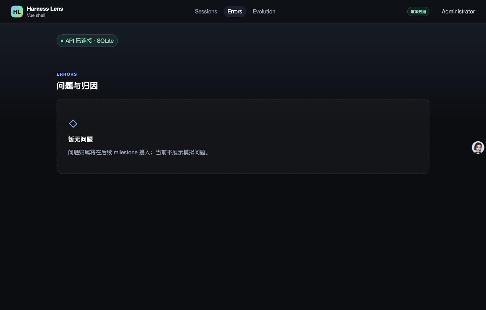
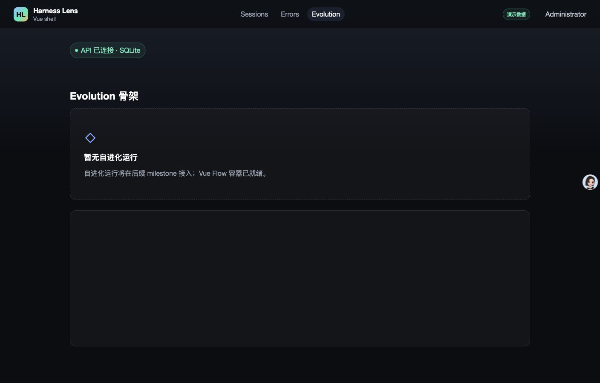
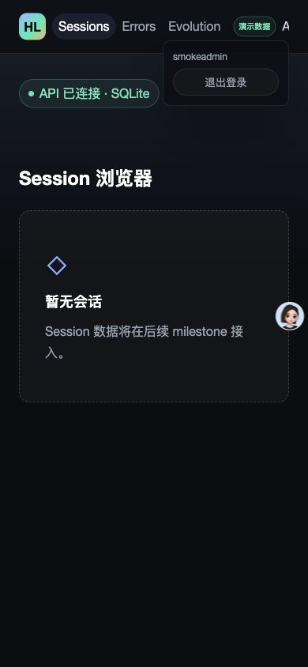
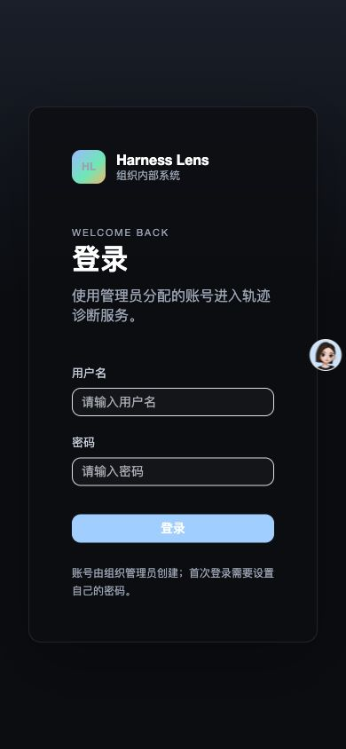

- Issue
- #34 · M2 本地会话导入
- PR
- #85
- Commit
- 2cdb11e
- Runtime
- FastAPI + Vite + Chrome
- Database
- temporary SQLite
- Source
- local Claude Code sessions · structure only in report
Harness Evolution · PR #85
M2-02 本地会话导入集成冒烟报告
在真实 Claude Code 本地目录、临时 SQLite、FastAPI、Vite 与 Chrome 上验证本地轨迹导入。4/66/62 身份一致，首次写入 66+66 行，重复导入零变更，严格异常路径拒绝，浏览器主链路无失败。
16冒烟检查
0失败
4 / 66 / 62roots / JSONL / subagents
27聚焦导入测试
Environment and Artifact
2026-10-25 · macOS · Chrome · FastAPI · Vite · SQLiteScenario Matrix
16 pass| # | 场景 | 结果 | 观测 | 证据 |
|---|---|---|---|---|
| 01 | 本地目录身份扫描 | PASS | 发现 4 个 root、66 个 JSONL、62 个 subagent；root 使用 session id，subagent 身份与文件/目录交叉一致。 | verify:local-sessions focused identity tests |
| 02 | 首次事务导入 | PASS | 首次导入写入 66 个 payload 与 66 个 source index 行。 | inserted_payloads=66 inserted_source_records=66 |
| 03 | 重复导入零副作用 | PASS | 相同源再次导入为 0 inserted / 0 updated / 66 unchanged。 | second import result |
| 04 | 数据库聚合一致 | PASS | 4 roots、62 subagents、66 payloads、66 source records；无重复复合键或坏 hash/line count。 | SQLite aggregate query |
| 05 | 运行时状态保留 | PASS | 人为写入的 processed_at/hash/parser_version 与 received_at 在再次导入后保持不变。 | processed marker preserved received_at preserved |
| 06 | 时间字段语义 | PASS | payload updated_at 来自源文件 mtime 并截到秒；source received_at 使用首次发现时间。 | mtime 2026-10-23 received_at 2026-10-25 |
| 07 | 未提前归一化 | PASS | session_families、agents、agent_events、user_turns 均未写入；source_records 仅一条用于验证运行态保留的显式标记。 | families=0 agents=0 events=0 turns=0 |
| 08 | 原文单次落库 | PASS | trajectory_payloads 中共 66 行，每对 (rootSessionId, agentId) 唯一，payload 文本只保存一次。 | duplicate_payload_keys=0 bad_rows=0 |
| 09 | 严格异常输入 | PASS | 27 个聚焦测试覆盖 malformed JSONL、重复键、错误/过长身份、缺 meta、orphan meta、symlink、大小上限和 CLI 脱敏。 | pnpm test:api -- tests/m2-02-local-session-import · 27 passed |
| 10 | Symlink 源拒绝 | PASS | 通过 symlink 指向真实源时，CLI 在建库前返回 exit 2，只输出 `session source must not be a symlink`，不含绝对路径。 | real CLI symlink attempt |
| 11 | 本地数据卫生 | PASS | data/ 与 claude-code-sessions/ 均被忽略，git 跟踪文件数为 0；报告与日志无轨迹正文。 | verify:local-data git ls-files count=0 |
| 12 | 登录与强制改密 | PASS | 临时管理员登录后强制进入改密页；完成改密后回到 /sessions。 | screenshots/01-sessions.jpg |
| 13 | 三入口导航 | PASS | Sessions、Errors、Evolution 三入口均可达，active 状态与占位文案正确；页面不展示伪领域数据。 | screenshots/02-errors.jpg screenshots/03-evolution.jpg |
| 14 | 390px 响应式 | PASS | 390×844 下 scrollWidth=clientWidth=390；用户菜单与退出按钮完整位于视口内。 | screenshots/04-narrow-sessions.jpg responsive measurements |
| 15 | 退出与受保护回跳 | PASS | 退出到 /login；再访问 /sessions 安全回跳为 /login?redirect=/sessions。 | screenshots/05-login-after-logout.jpg logoutUrl and protectedUrl |
| 16 | 全新标签控制台 | PASS | 全新 Chrome 标签深链 /evolution，在 1408px 与 390px 均无 warning/error；warm tab 的 viewport-resize warning 未在全新标签复现，记录为非产品缺陷观察。 | console-fresh.json · [] console-warm.json · observation |
Issues and Observations
No defects foundNo defects were found.
Evidence
5 screenshots




Automated Coverage Assessment
4 areas reviewed| 区域 | 覆盖 | 结论 | 建议 |
|---|---|---|---|
| 本地导入 | 真实本地目录 + 临时 SQLite + 27 个聚焦测试 | 4/66/62 身份、首次事务写入、重复导入与运行态保留均通过。 | 继续在 CI 使用合成目录，真实目录只做本地发布前验证。 |
| 异常与安全 | 严格负例测试 + 真实 symlink CLI | 身份、JSON、路径、大小、meta 和生产/live 防护均有稳定失败语义。 | 后续解析器继续复用同一 source error 边界。 |
| 浏览器壳 | Computer Use + 全新 Chrome 标签 | 登录、强制改密、三入口、窄视口、退出和安全回跳通过。 | 会话列表 API/UI 在后续 issue 接入后扩展浏览器数据场景。 |
| 开发态控制台 | warm tab + fresh tab comparison | warm tab 在人为 viewport resize 时出现一次 Vue Flow warning；fresh tab 在 1408px/390px 深链均无日志。 | 以 fresh-tab 结果作为产品判断；若后续再次出现，回到 m1-09 的 canvas sizing 回归继续定位。 |
Conclusion
通过m2-02 本地会话导入在真实数据、数据库和浏览器主链路上通过，未发现需要修复的集成缺陷。
- 真实本地导入为 4 个 root、66 个 Agent payload、62 个 subagent，重复导入零变更。
- 运行态处理字段与 received_at 在重导后保留，未提前生成归一化领域数据。
- 本地数据没有进入 Git，命令和报告未暴露轨迹正文或绝对路径。
- 全新 Chrome 标签无 warning/error；后续会话列表 UI 仍由后续 issue 负责。
证据源：真实本地 Claude Code 目录、临时 SQLite、FastAPI/Vite、Chrome Computer Use、聚焦自动测试。生成 HTML 不应手改。